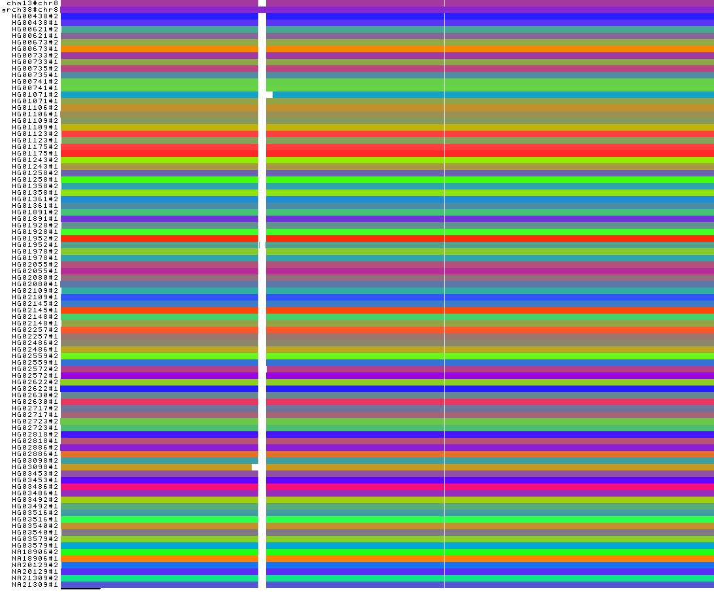

Remove artifacts and complex regions¶
Synopsis¶
De novo assemblies may present errors (mis-assembled sequences, e.g., misjoins and erroneous insertions/deletions) or
sequences that are difficult to align (e.g., centromeres). These issues lead to pangenome graphs with artifacts and/or
very complex regions. To make the downstream analyses easier, for e.g. read mapping against the graph or graph visualization,
pangenome graphs can be simplified by applying a set of odgi tools.
Warning
This is an advanced tutorial. It is recommended that you follow the other tutorials before tackling this one.
Steps¶
Get the Human chr8 dataset¶
Download the pangenome graph of the Human chromosome 8
in GFA format, decompress it, and convert it to a graph in odgi format:
wget -c https://s3-us-west-2.amazonaws.com/human-pangenomics/pangenomes/scratch/2021_05_06_pggb/gfas/chr8.pan.gfa.gz
gunzip chr8.pan.gfa.gz
odgi build -g chr8.pan.gfa -o chr8.pan.og --threads 2 -P
The last command creates a file called chr8.pan.og, which contains the input graph in odgi format. This graph contains contigs of
88 haploid, phased human genome assemblies from 44 individuals, plus the chm13 and GRCh38 reference genomes.
Identify problematic regions¶
The depth is a good metric to identify problematic regions in a pangenome graph. Here we define as node depth the number of times in which the node is crossed by all the paths present in the graph.
Low depth regions in the pangenome graph can be artifacts. To identify them, execute:
odgi depth -i chr8.pan.og -w 100:0:1 > chr8.pan.low_depth.bed
The chr8.pan.low_depth.bed file reports the regions where the node depth is between 0x and 1x. Regions closer to
100 bp have been merged into a single region. The file is in BED format. -w 100:0:1 selects a window size of
100 bp where the depth must be within 0 and 1.
High depth regions in the pangenome graph can indicate complex regions. To identify them, execute:
odgi depth -i chr8.pan.og -w 100000:5000:100000000 > chr8.pan.high_depth.bed
The chr8.pan.high_depth.bed file reports the regions where the node depth is between 5000x and 100000000x. Regions
closer to 100000 bp have been merged into a single region. The file is in BED format.
If the extracted regions are too short, the cleaned graphs can become too fragmented. To avoid this, filter out all regions shorter than or equal to 10000 bps, merging the adjacent ranges:
(awk '$3 - $2 > '10000 chr8.pan.low_depth.bed ; \
awk '$3 - $2 > '100000 chr8.pan.high_depth.bed ) | \
bedtools sort | bedtools merge > chr8.pan.regions_to_remove.bed
The chr8.pan.regions_to_remove.bed file contains all the regions to remove.
Remove the identified regions¶
To clean the pangenome graph, execute:
odgi paths -i chr8.pan.og -L | grep '^grch38#chr8' > chr8.pan.path_to_fully_retain.txt
odgi extract -i chr8.pan.og --threads 2 -P \
--inverse \
-b chr8.pan.regions_to_remove.bed \
-R chr8.pan.path_to_fully_retain.txt \
-o chr8.pan.clean.og
The path_to_fully_retain.txt contains the name of the reference genome to fully retain in the resulting graph. This
is necessary to be able to use the reference coordinate system in the cleaned graph. Moreover, keeping a full genome help
to avoid breaking the pangenome graph in complex regions like the centromere.
The --inverse flag specifies that the regions in the regions_to_remove.bed file are the regions to remove from the graph.
The resulting graphs presents several connected components:
odgi stats -i chr8.pan.clean.og -W | head -n 1
##num_weakly_connected_components: 24583
This is due to de novo assembly artifacts, under-alignments, and/or complex regions to align. Nevertheless, the clean version of the input graph can be found in its biggest connected component. To obtain it, execute:
odgi explode -i chr8.pan.clean.og -p chr8.pan.clean.exp -b 1 -s P -O
The command creates a file called chr8.pan.clean.exp.8.og, which contains the biggest connected component
(the number 8 in this example) in odgi format. The -s P option specifies to consider as biggest component the
one with the longer path. -b selects the number of biggest components to retain.
Display graph stats¶
To have basic information on the cleaned graph, execute:
odgi stats -i chr8.pan.clean.exp.8.og -S | column -t
#length nodes edges paths
149046153 4044095 5600776 65354
Generate a 1D visualization¶
To visualize the cleaned graph, first sort it:
odgi sort -p Y -i chr8.pan.clean.exp.8.og -o chr8.pan.clean.sort.og -P
And then execute:
odgi paths -i chr8.pan.og -L | cut -f 1,2 -d '#' | uniq > chr8.pan.haplotype_names.txt
odgi viz -i chr8.pan.clean.sort.og -x 1000 -o chr8.pan.clean.sort.png -M chr8.pan.haplotype_names.txt
The haplotype_names.txt file contains all the haplotypes present in the input assembly. They are necessary to
merge the paths belonging to the same haplotype in the same row in the image.
We obtain the following PNG image:
The 1-Dimensional visualization shows that all centromeres have been removed. Indeed, they present high depth being very complex regions. Only the GRCh38 reference centromere is present because it was explicitly preserved during the removal step of the low and high depth regions.
Moreover, for two haplotypes (HG01071#2 and HG03098#1), a region close to their centromere is erroneously absent.
This may be due to under-alignment: this leads to the generation of low depth nodes in the pangenome graph, which would
be removed during the removal step.